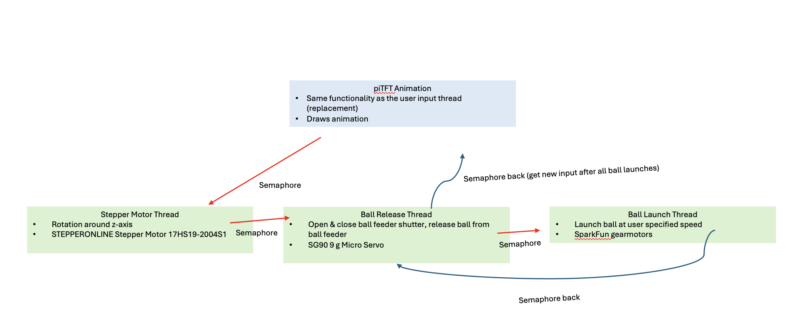

Ping Pong Launcher
Introduction
Practice is crucial to developing in table tennis skills. However, it often requires costly equipment or a training partner. Many players who would greatly benefit from structured solo training are unable to invest in commercial automatic ball launchers, which typically include advanced features such as adjustable angles, programmable shot sequences, and variable speed control. These devices can easily cost hundreds, if not thousands, of dollars.
This project centers on the need for an affordable and customizable ping pong ball launcher, built using readily available components and a Raspberry Pi 4 as the main controller. We are motivated by the fact that modern embedded systems and motor control technologies can replicate many of the features of expensive commercial launchers at a significantly lower cost.
The original proposal was to create a badminton launcher, inspired by one of Michelle’s friend who is taking badminton lessons as part of his university's PE requirement, however, due to safety concerns and limited laboratory testing space, the project was adjusted to focus on a ping pong ball launcher instead. We also made several design refinements, transitioning from a servo-based flinging arm to a dual DC motor wheel system to achieve better torque, consistency, and control.

Our system allows users to practice receiving serves and returns without the need for a training partner. It also enables control of essential parameters, including horizontal positioning (via stepper motor rotation), launch timing and speed (via dual DC motor wheels), and ball release sequencing (via a servo-controlled feeding mechanism). Users interact with the launcher through a touchscreen interface on the piTFT. We developed a functional training tool that demonstrates how embedded systems concepts learned in ECE 5725 can be applied to real-world applications by integrating common components such as DC motors, a servo motor, and a stepper motor, all controlled through multithreaded Python code.
Design
We initially proposed building a badminton shuttlecock launcher. After showing our idea to Dr. Ma and the TAs, we decided to switch to a ping pong ball launcher instead for lab safety purpose as launching a birdie in the lab could be dangerous for a large launch range. We still kept the core of the system and main challenges of automated ball launching and positioning control the same.
Launch Mechanism Evolution:
Our launch mechanism had three different design stages:
Initial Design: Dual DC motor grip system
In our first proposal from homework 3, we wanted to utilized what we have from lab 3 to use two high speed DC motors with rubber wheels to grip and shoot the ball. We thought this was the most straightforward. However, we wanted to make it more of a “launcher look” so we decided to change our design a bit.
Second Iteration: Servo motor based flinging arm
Dr. Ma suggested making the design simpler by using one motor and a lever arm (like a ping pong paddle) to fling the ball up and out. This approach was inspired by the one dimensional helicopter physical system from ECE 4760 Microcontroller lab. We used a measuring spoon and a servo motor to implement this design. The ping pong ball fit perfectly in the spoon making it look very feasible to do. However, when we tried to test it in week 3, we discovered a serious issue where the servo motor didn’t have enough torque to throw the ping pong ball to the right position at the right speed and distance.
Final Design: Dual DC motor wheel system
We eventually decided to go back to our original idea of using two DC motors with wheels. This design provided the balls the necessary amount of torque and speed control so they could be launched consistently. One servo motor was use to control the ball release, then the wheels would grip the ping pong ball as it falls through and accelerate it forward.
Positioning Control Systems:
Horizontal Positioning: We used a stepper motor at the bottom of the launcher that turns the whole setup to change the horizontal angle. Users can set the angle to be -360 degree to 360 degree which allows the launcher to aim left, center, right across the table. We put this stepper motor on top of our tripod, making some distance between the point where the ball launches and the table so it could go farther.
Vertical Positioning: We initially planned to use an additional servo motor to control the vertical launch angle. This required another board placed on top of the stepper motor and rest of the setup on top of that board as well. However, we decided to remove this feature to avoid stability issues. The 3D printed board fits the stepper motor itself and can move without an issue but putting objects on top and tilt it would cause the whole thing to fall. Moreover, ping pong ball should be launched downward and the tripod+gravity already provides this advantage for us. The final design launches the ball in a fixed forward downward trajectory, making it similar to realistic pratice scenarios.
Ball Feeding Mechanism:
A servo motor controls the release of ping pong balls from a cardboard tube feeder made out of toilet paper roll one at a time. We cut a small piece of cardboard that blocks the balls from the tube from coming out and attached it to the servo. It acts as a gate for the ball release that opens and closes the tube’s bottom. We initially planned to use a popsicle stick but it is easier and better looking to do it this way. When closed, it holds the stack of ball and when opened, it releases one ball into the launch wheels and quickly goes back.
Physical Assembly:
Base: A wooden board is placed on top of the stepper motor that serves as a base for the launcher. It holds the main controllers such as the Raspberry Pi 4 and breadboard. We sawed a square hole in the middle of the board to put the stepper motor in which allows its shaft stick out. And to further keep the board from tipping over, it is held in place with velcro tape and double sided mounting tape.
Launcher: Instead of putting a separate rotating platform on top of the stepper motor which made it hard to balance, we mounted the DC motors and ball feeder tube directly on the stepper motor shaft. This design lowered the center of gravity and improved overall stability.
Ball feeder: A cardboard tube made from multiple toilet paper rolls was cut open to allow the balls to pass through smoothly. It is attached to multiple wood pieces for stability. The servo controlled gate at the bottom end of the tube allows one ball out at a time into the space between the two DC motor wheels.
Mounting and adhesion: We used a mix of hot glue, regular tapes, electrical tape, mounting tape, and velcro tape to hold the parts in place.
Components:
Besides the components stated above, we initially planned to use the MPU 6050 accelerometer to detect launch motion and orientation. We then switched to the LIS3DH accelerometer as it would provide enough features for our project as we only required 3 axis acceleration data. In the end, we found that precise motion sensing was not critical for our final design and so we avoided both.

Program
Thread Structure (Before Animation):

User input thread: This thread reads user input parameters on terminal including stepper motor angle which is the horizontal position, number of balls to launch, the time between each ball release, and the speed of the DC motors
Stepper motor thread: This thread waits for semaphore signal from user input thread before executing the rotation. It controls the horizontal position to the desired angle.
Ball release thread: This thread opens the gate to release one ball then closes it quickly after receiving a semaphore signal from the user input thread.
Ball launcher thread: This thread spins up the DC motors to launch the ball when it received semaphore signal from the ball release thread.
Motor Control:
Stepper motor: We implemented this using step sequencing with appropriate delays between phases. The motor rotates to user input desired angles with calibrated step counts.
Servo motor: The servo motor is controlled using PWM at 50 Hz (20 ms period) as specified in the SG90 datasheet. We calibrated two positions: release_closed = 180 which is the gate closed position and release_open = 90 which is gate open when release the ball. At first, the servo would immediately open when we start the program. We fixed this by setting the initial duty cycle to angle_to_dc(180) to ensure it starts in a closed position
DC motors: These motors are controlled through the motor driver using PWM for speed control. We utilized our code from rolling_control.py and run_test.py from lab 3.
Testing
For the stepper motor, it initially did not rotate properly despite multiple code revisions. After purchasing a multimeter, we determined that the issue was related to the power supply rather than the software. One battery holder had an open connection tab that was not fully closed, and another two-battery holder had broken power terminal wires. After replacing the faulty battery holder, the stepper motor began operating as expected.
We also learned two important details about the servo motor. The S51 micro servo (9 g) from Smraza is essentially a rebranded SG90, which allowed us to reference the SG90 datasheet for proper control parameters. In particular, the PWM signal must have a period of exactly 20 ms (50 Hz) to ensure correct servo operation.
Initially, the DC motors functioned correctly when tested individually. However, after the full system was assembled, they stopped operating. Because the same motors and control code had worked reliably in Lab 3, we concluded that the issue was unlikely to be software-related. Further investigation suggested that the problem stemmed from wiring and motor driver connections rather than the control logic.
During testing, one of the batteries failed and was safely disposed of. We believe this failure was caused by an incorrect power connection, where a wire was connected to an inappropriate voltage range. To improve reliability and safety, we switched to using a regulated power supply to power the DC motors instead of batteries.
We also encountered issues with the PiTFT interface. In particular, after running the animation thread, the display would occasionally turn black and fail to update properly. This behavior suggested a threading or display refresh issue, which highlighted the challenges of managing concurrent graphical updates in a multithreaded environment.

Conclusion
Overall, our project performed largely as intended and successfully demonstrated the core functionality of an affordable, customizable ping pong ball launcher controlled by a Raspberry Pi 4. During the final demo, the system was able to launch ping pong balls consistently while allowing user control over key parameters such as horizontal rotation, launch timing, and ball feeding. One particularly successful aspect of the demonstration (during testing, it doesn't always release one ball at a time, but often two together) was the feeding mechanism, which reliably released balls one at a time, preventing jamming and ensuring consistent launches.
Several aspects of the system worked particularly well. The dual DC motor wheel launcher provided sufficient torque and relatively consistent launch performance. The servo-based feeding mechanism performed reliably during the demo by dropping a single ball per launch cycle, which was a significant improvement over earlier designs. In addition, the use of multithreaded Python code allowed motor control, user input, and display updates to run concurrently without major timing conflicts.
However, some parts of the system did not work exactly as expected. Hardware reliability was a recurring challenge, particularly with power distribution and wiring. Issues with battery connections and motor driver wiring caused intermittent motor failures during development, and one battery failed due to an incorrect power connection. These issues required troubleshooting with a multimeter and ultimately led us to switch to a regulated power supply for improved stability. Additionally, while the PiTFT interface functioned, we encountered display and animation issues, including occasional black screens after running animation threads, likely due to threading or display refresh conflicts.
The project was fun to design and build.

Future Work
We hope to add additional controls to the ping pong ball launcher, including rotation about other axes to achieve more degrees of freedom. Specifically, we plan to add a servo motor beneath the two DC motors to control an additional launch angle. We also aim to develop a PiTFT interface that maps a ping pong table onto the display, allowing users to tap a coordinate on the screen and have the launcher send the ball to the corresponding location on the table.
Work Distribution

Michelle Yang: Designed most of the software architecture (motor threads, multithreading).
Ariel Kang: Designed most of the animation (animation thread).
Parts List
| Component | Cost |
|---|---|
| Raspberry Pi 4 Model B | $63.00 |
| Adafruit Capacitive piTFT | $44.95 |
| Adafruit stepper motor | $14.50 each |
| 180 degree micro servo motor | $3.95 each |
| Tripod (from HongKong) | $10.00 |
| Breadboard | $5.00 |
| Wires | N/A |
| Cardboard/toilet paper rolls | N/A |
| Tapes & hotglue | N/A |
Total: ~169.9